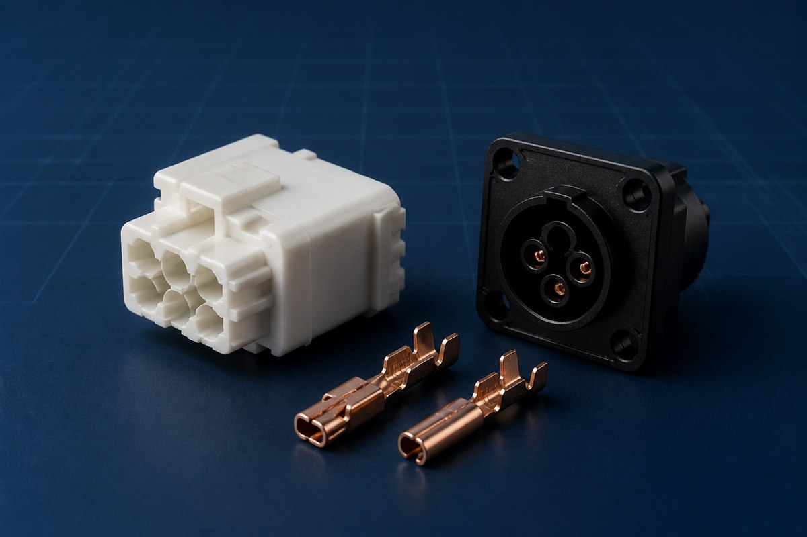
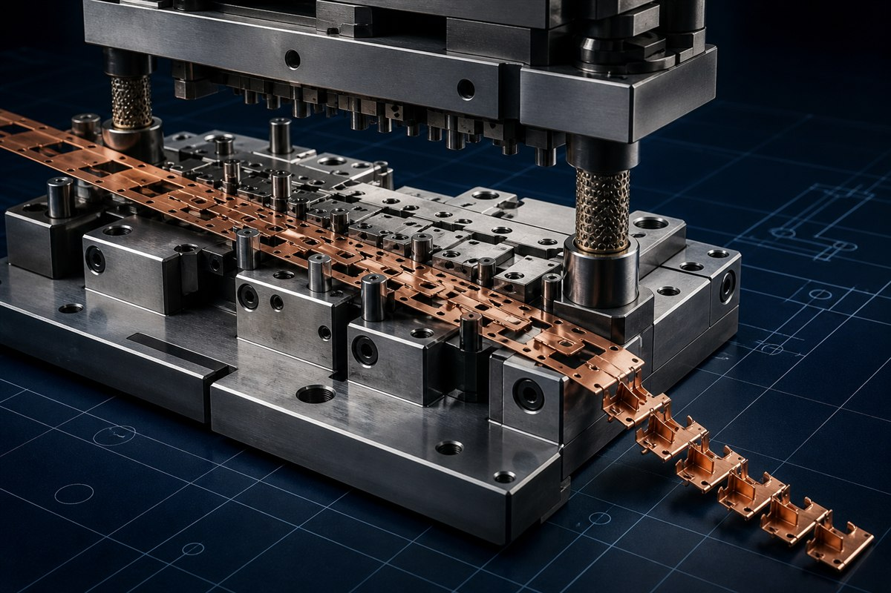
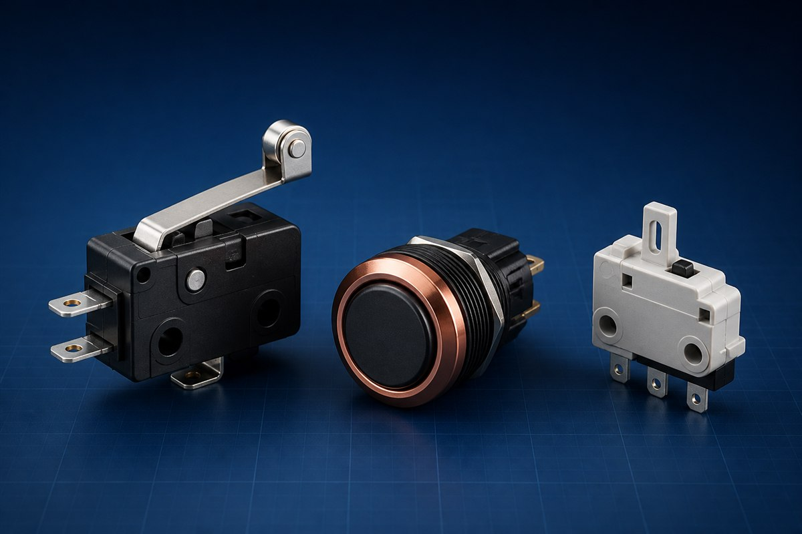
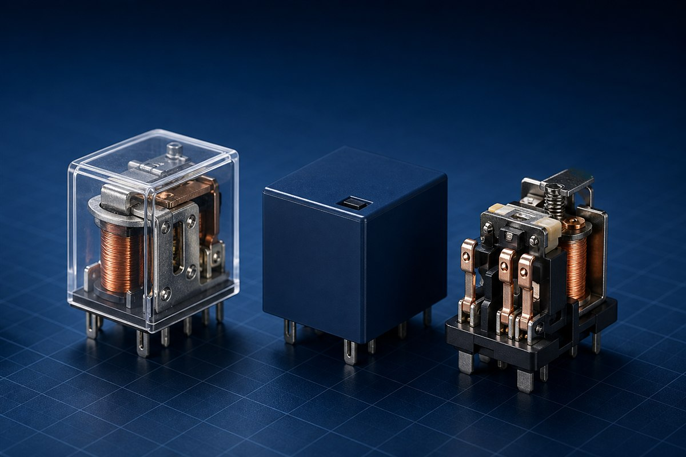

Product family
Connectors
Application-oriented interconnect solutions with options for terminals, housings and mounting configurations.
Explore connectors →Beekay Precision works with OEMs and product teams to develop connectors, switches, relays and custom electromechanical components—from tooling and prototype validation to repeat production.

Our planned product families focus on dependable mechanical fit, repeatable electrical interfaces and customization for OEM applications.

Application-oriented interconnect solutions with options for terminals, housings and mounting configurations.
Explore connectors →
Compact switching mechanisms designed around actuation, life, packaging and electrical requirements.
Explore switches →
Electromechanical switching concepts for control applications, with product details under development.
Explore relays →Our experience in precision press tools and plastic moulds informs how parts are designed, validated and prepared for manufacturability.
We review the application, interfaces, performance expectations and planned quantities.
Product, material and tooling decisions are developed around manufacturability.
Samples and prototypes support fit, function and process review before release.
Approved processes and inspection points support repeat production schedules.
Bring Beekay into your design process. We can review the requirement and identify a practical path for development and tooling.